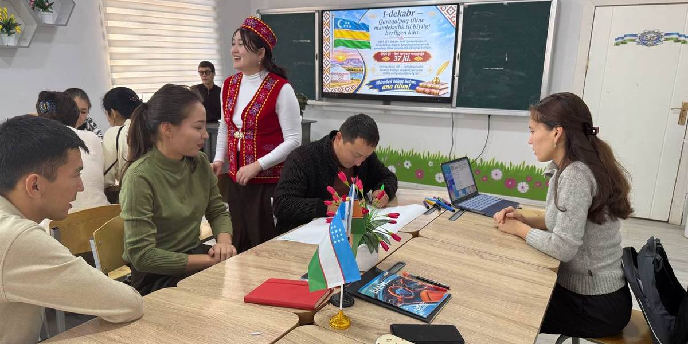

Kasbiy rivojlanish kuni: «Ona tilimiz imkoniyatlari»
28-noyabr kuni Kasbiy rivojlanish kuni doirasida qoraqalpoq tili va adabiyoti o‘qituvchisi Gulshexra Qarlıbaeva «Ona tilimiz imkoniyatlari» mavzusida seminar o‘tkazdi. Seminar 1-dekabr — qoraqalpoq tiliga davlat tili maqomi berilgan kunga (1989-yil) bag‘ishlandi; bu yil ushbu voqeaga 37 yil to‘ladi. 21 nafar o‘qituvchi qatnashdi: ular guruhlarga bo‘linib topshiriqlarni bajarishdi va o‘z ishlarini taqdim etishdi.
To‘liq o‘qish →